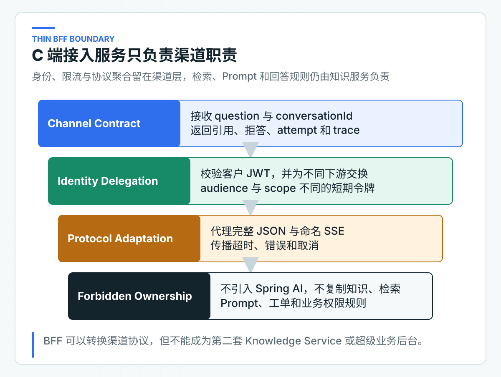
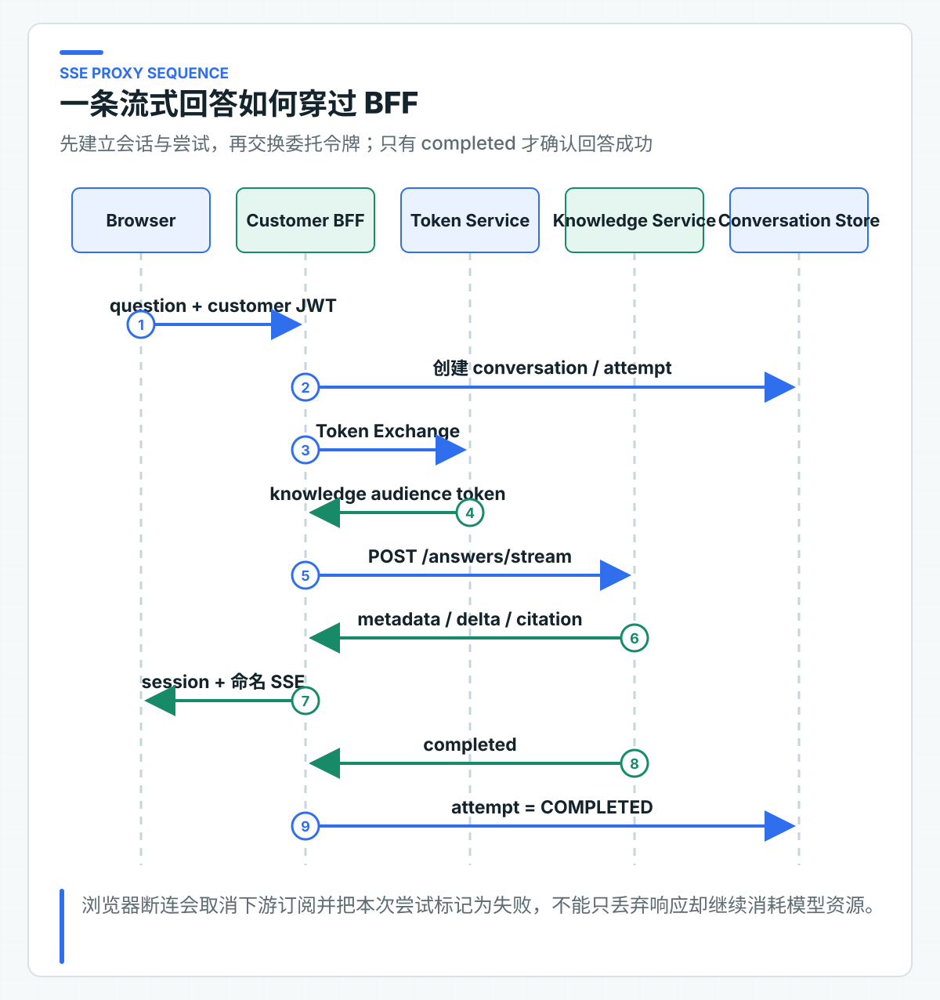

C 端为什么需要薄 BFF：鉴权、限流、SSE 和 DTO 聚合
内部页面已经能调用 Knowledge Service，接入 C 端时却会立刻多出一组新问题。客户令牌能不能交给内部服务？浏览器断连后怎样取消模型请求？重复点击如何限流？不同渠道的 DTO 又由谁兼容？
这些问题属于终端入口；知识权限、检索、Prompt、模型调用、引用和拒答则属于 Knowledge Service。把两类职责都塞进一个 Controller，代码很快会同时受渠道发布和 AI 链路变化牵制。
项目在 Customer Web 与 Knowledge Service 之间加入面向前端的后端（Backend for Frontend，BFF）。它负责客户身份、委托令牌、渠道限流、回答与 SSE 转发、终端 DTO，以及反馈和转人工入口；不引入 Spring AI，也不读取知识数据库。
这里的“薄”指业务所有权窄，不是类的数量少。只要 BFF 始终围绕渠道身份、协议和会话工作，即使代码不少，边界仍然清楚。
配套的 Customer Web 是独立 React 应用。它只调用 Customer BFF，负责流式渲染、引用展示、反馈、重新生成和转人工。它不进入 Maven reactor，前端构建失败仍会让仓库总验证失败。
先划清渠道与知识服务的边界
浏览器直连会混合两类职责
浏览器直连知识服务看起来最省事：前端携带 Token，请求 /answers 或 /answers/stream，知识服务返回结果。这个方案很快会遇到四类问题。
第一类是身份受众。客户登录令牌通常签发给 Customer BFF 或统一 API 网关，不应该直接成为 Knowledge Service 的访问凭证。如果同一个高权限 Token 可以穿过所有服务，任何一个终端泄漏都会扩大影响范围，下游也无法判断请求究竟由哪个渠道代理。
第二类是渠道协议。Web、App、小程序和第三方渠道对错误码、分页、SSE 事件、字段兼容和发布节奏的要求不同。让 Knowledge Service 同时兼容所有终端，会把渠道演进压力带进知识核心。
第三类是渠道限流。客户连续点击重试、浏览器刷新、移动网络重连和机器人扫描都发生在渠道边界。知识服务可以保护模型并发，但它不适合承担“每个客户一分钟允许多少次咨询”这类终端策略。
第四类是攻击面。浏览器不应知道内部服务地址、内部 scope、模型错误细节和服务拓扑。BFF 对外返回稳定状态码和错误码，下游实现细节留在受控网络中。
这四类问题足以说明 BFF 的价值，但也容易把它推向另一个极端：所有逻辑都塞进 BFF。下面先划清 BFF 与 Knowledge Service 的职责。

| 能力 | Customer BFF 负责 | Knowledge Service 负责 |
|---|---|---|
| 身份 | 验证客户 JWT，交换下游委托令牌 | 再次验证委托令牌与知识 scope |
| 限流 | 按客户和渠道做入口限流 | 按模型、检索资源和实例容量做服务保护 |
| SSE | 转发命名事件、传播取消和空闲超时 | 产生模型事件、引用和完成信号 |
| DTO | 面向渠道隐藏 Provider 细节 | 定义知识回答字段与校验规则 |
| 会话 | 保存短时交互状态和回答尝试 | 重新检索当前授权知识，不信任历史答案 |
| 知识规则 | 不拥有 | 文档、ACL、检索、Prompt、引用与拒答 |
判断一段逻辑应放在哪里，可以问两个问题：它是在适配终端，还是在解释知识业务；换一个渠道后它是否仍然成立。若规则在 Web、App 和客服终端中都相同，例如 ACL 必须在 TopK 前过滤，它属于 Knowledge Service。若规则只决定 C 端返回哪些字段、怎样限流和怎样组织 SSE，它更适合 BFF。
请求体只表达业务意图
Customer BFF 的回答请求只有两个字段：
{
"conversationId": "可选的会话标识",
"question": "退款多久到账？"
}
请求体没有 tenantId、customerId、角色和部门。身份只来自资源服务器已经验证的 JWT。CustomerJwtIdentityFactory 从 Token 提取主体、租户、角色和部门，再形成项目自有的 CustomerAccessToken。
这样设计的重点不在于少几个字段，而在于消除冲突来源。假设请求体写 tenantId=B，Token 写 tenantId=A，服务若允许业务代码“选择一个”，越权漏洞就已经产生。身份事实只有一个来源后，Controller 不需要在每个接口重复比较 Header、JSON 和 SecurityContext。
CustomerAnswerRequest 通过 Bean Validation 限制会话标识与问题长度。CustomerConsultationController 把已验证 JWT 映射为客户身份，再调用应用服务。Controller 不读取知识库，也不构造 Prompt。
用委托 Token 收窄下游权限
客户 Token 的受众是 BFF，Knowledge Service 需要面向自己的短期令牌。这里使用 RFC 8693 Token Exchange 完成委托。BFF 把已验证的客户 Token 作为 subject_token 交给身份系统。身份系统再签发 audience 为 knowledge-service、scope 为 knowledge:answer 的令牌。
调用 Ticket Agent 时再申请另一枚令牌：audience 为 ticket-agent-service，scope 为 ticket:task:create。两枚令牌不能互换。知识问答权限不等于创建工单任务权限，受众不同也可以阻止令牌被错误服务接受。
OAuth2TokenExchangeDelegatedTokenClient 发出的表单包含：
grant_type=urn:ietf:params:oauth:grant-type:token-exchange
subject_token=<customer access token>
subject_token_type=urn:ietf:params:oauth:token-type:access_token
requested_token_type=urn:ietf:params:oauth:token-type:access_token
audience=knowledge-service
scope=knowledge:answer
真实企业 IdP 通常还会验证调用 Token Exchange 的客户端身份。OAuth2TokenExchangeDelegatedTokenClient 支持 Basic 客户端认证和独立超时。它只接受访问令牌类型的 Bearer 响应，并检查令牌非空、有效期为正数。client_id、client_secret 等配置位于 application.yml 的 java-ai.identity，两项必须同时提供。
仓库中的值只用于说明配置结构，生产凭据应由部署平台的密钥系统覆盖。身份系统签发的新令牌应保留客户主体与租户，并增加 act.sub=customer-bff。下游由此能同时知道“代表谁”和“由谁代理”。
Knowledge Service 与 Ticket Agent Service 不能因为请求来自内网就直接信任 BFF。它们仍要验证签名、issuer、audience、有效期、主体、租户、actor 和 scope。BFF 是受控调用方，不是可以替下游做最终授权的超级网关。
BFF 同时管理回答协议与生命周期
完整回答经过 BFF 的过程
非流式链路适合需要一次性拿到完整结构化结果的渠道，也适合反馈、重试和工单升级前保存确定结果。
WebClientKnowledgeAnswerClient 使用委托令牌调用 Knowledge Service。发送给下游的仍然只有当前问题和经过裁剪的会话上下文，不包含授权字段。下游返回的模型名、Token 使用量和 finish reason 不会原样暴露给 C 端，BFF 只保留终端真正需要的内容：
{
"conversationId": "9b7f...",
"attemptId": "753a...",
"retryOfAttemptId": null,
"answer": "退款审核通过后通常在 1 到 5 个工作日到账。",
"citations": [
{
"documentId": "refund-policy",
"version": "v1",
"sectionId": "arrival-time",
"title": "退款到账时间"
}
],
"refused": false,
"refusalReason": null,
"traceId": "trace-123"
}
Provider 模型名、finish reason 和 Token 适合进入 Trace、Metric 和成本报表，不适合直接堆到客户页面。渠道 DTO 的目标是稳定表达业务结果，而不是展示系统内部用了多少组件。
SSE 转发同时管理生命周期
流式接口最容易在演示中显得简单。BFF 从下游订阅 text/event-stream，再把数据写给浏览器，看起来几十行代码就能完成。真实项目还要处理会话标识、事件名称、空闲超时、下游错误、浏览器取消，并在流结束时把 AnswerAttempt 更新为完成或失败。
流式请求先创建 conversation 和 answer attempt，再交换 Knowledge Token 并订阅下游。BFF 先发送 session 事件，让浏览器拿到 conversationId 和 attemptId。后续再转发 Knowledge Service 的 metadata、delta、heartbeat、citation、completed 和 error。

事件顺序具备业务含义。session 和 metadata 固定在最前面，completed 或 error 负责收尾。正文输出期间，delta 与 heartbeat 可以按实际耗时交错出现，不能假设所有心跳都在文本之后。
session建立终端后续反馈、重试和升级的定位键。metadata提供 Trace，便于跨服务排查。delta只承载增量文本，可能出现零次或多次。heartbeat可以穿插在多次delta之间，防止空闲链路被代理误判为失活。citation提供模型声明、且已通过本次上下文校验的引用；它不等于应用已经证明每句话都被引用内容支持。completed携带refused和refusalReason。BFF 保存回答、引用和拒答状态后，才把 attempt 标记为完成。error是流内稳定错误，不应伪装成一段普通文本。
浏览器端不能直接用 EventSource，因为这里是带 JSON 请求体和 Bearer Token 的 POST 请求。HttpCustomerBffClient 使用 fetch 发起请求，通过 ReadableStream 解析命名事件，并用 AbortController 处理“停止生成”和页面离开。连接关闭但没有收到 completed 或 error 时，前端按中断处理，不能把已收到的半段文本当成完成回答。
WebClientKnowledgeAnswerStreamClient 按事件名解析 JSON，而不是把下游字节原样暴露给终端。未知事件、缺少字段或错误 HTTP 状态会被当成协议异常；拒答完成事件缺少 refusalReason 也会被拒绝。这样下游升级协议时，BFF 可以在测试中及时发现不兼容，而不是让浏览器随机报错。
CustomerConsultationService 使用 Flux.usingWhen 管理流式尝试的生命周期。收到 completed 后，它把累积文本、引用、拒答状态和 Trace 保存为同一个 KnowledgeAnswerView，保存成功后才向浏览器发送 BFF 的 completed。下游异常、流提前结束或客户端取消时，attempt 会被标记为失败。
如果响应已经开始，BFF 不能再改 HTTP 状态码。普通下游异常会转换为 KNOWLEDGE_STREAM_FAILED，空闲或总时长超限则转换为 KNOWLEDGE_STREAM_TIMEOUT。页面关闭后，取消信号会继续传给 WebClient 和 Knowledge Service；这能及时释放应用侧连接，Provider 是否同时停止生成与计费，还要用所接模型的真实链路验证。
同时限制空闲时间和总时长
当前完整 JSON 的 Knowledge HTTP 调用最多等待 35 秒，Knowledge Service 把首次模型调用、重试间隔和可能的第二次调用一起限制在 30 秒内。只有 Provider 5xx 或网络 I/O 异常会重试一次；429 和整轮超时都不重试。SSE 的语义不同：正常回答可能持续输出较长时间，不能直接复用同步接口的 35 秒预算。
流式客户端同时设置两道边界。连续 30 秒没有收到 metadata、delta、heartbeat、citation 或 completed，判定连接失活。即使一直有 heartbeat，整条下游流超过 2 分钟也会结束。前者容忍模型短暂静默，后者避免只有心跳、始终没有业务结果的连接永久占用资源。
超时预算还要从端到端考虑，而不是每层都拿一份完整等待时间。
以当前配置为例，Knowledge Service 的整轮模型预算是 30 秒，BFF 的 Knowledge HTTP 等待上限是 35 秒。终端整体超时还要继续给 BFF 鉴权、Token Exchange 和网络传输留出时间。具体数字需要结合压测结果设定，但每一层都要给下游完成与映射结果留出空间。否则下游的重试还没结束，上游就已经宣布失败。
Token Exchange、Knowledge 和 Ticket 使用不同超时。Token Exchange 超时会映射为稳定的 504 DOWNSTREAM_TIMEOUT。尚未开始 SSE 时，Knowledge 或 Ticket 超时也使用同一错误。身份令牌没有拿到时，不会继续调用业务下游。
SSE 一旦开始，HTTP 状态已经不能修改，超时会通过 KNOWLEDGE_STREAM_TIMEOUT 事件告诉前端。创建 Ticket 发生超时后不能换一个幂等键再次创建。工单升级链路必须复用原幂等键，并查询原任务结果。
入口保护要区分限流和错误语义
按保护对象设计两层限流
“加一个限流器”不是完整设计。需要先回答限流维度、窗口、拒绝语义和多实例一致性。
Customer BFF 的入口限流保护客户渠道和后端成本，限流 Key 使用 tenantId + subject。同一客户在一分钟内超过请求上限时返回 429，另一个客户不会被共同计数。Key 来自 JWT，不能由请求体伪造。
InMemoryFixedWindowConsultationRateLimiter 是单进程适配器，通过 ConcurrentHashMap.compute 原子更新计数。它用于检查限流 Key 和 429 响应，不适合多实例生产：三台 BFF 各允许 20 次，客户实际可能发起 60 次。
生产环境可以把 ConsultationRateLimiter 端口替换为 Redis、API 网关或公司统一限流平台。无论使用哪种组件，都应保留业务 Key 与错误语义。只按 IP 限流会误伤 NAT 后的正常客户，也容易被移动网络变化绕过；只按租户限流又可能让一个异常客户占满整个租户配额。常见做法是组合客户级、租户级和全局模型容量保护。
Knowledge Service 仍需要自己的并发上限和 Provider 限流。入口限流回答“某个客户能多快请求”，模型并发上限回答“单实例能承受多少并发”，两者保护对象不同，不能互相替代。
错误码告诉终端下一步动作
如果 BFF 把所有异常都包装为 500 AI_ERROR，前端只能统一展示“系统繁忙”。真实业务至少要区分：
| HTTP | 稳定语义 | 渠道处理 |
|---|---|---|
| 400 | 问题、会话或反馈参数无效 | 提示用户修正输入 |
| 401 | 客户 Token 缺失或无效 | 重新登录或刷新令牌 |
| 403 | 会话不属于当前客户，或缺少 scope | 终止请求，不自动重试 |
| 409 | 会话版本、尝试状态或幂等内容冲突 | 刷新状态后决定下一步 |
| 429 | 客户入口限流 | 根据 Retry-After 或产品策略稍后再试 |
| 502 | Knowledge、Ticket 或身份服务异常 | 展示暂时不可用，可保留 Trace |
| 504 | 身份、Knowledge 或 Ticket 在预算内未返回 | 提示超时，写操作先查询原任务 |
CustomerConsultationExceptionHandler 把权限、限流、下游异常、下游超时、参数错误和状态冲突映射为不同状态。模型证据不足不属于技术故障：无论完整响应还是 SSE completed，Knowledge Service 都会返回 refused=true 和拒答原因，BFF 按正常业务结果保存并交给终端。
区分拒答与故障很重要。拒答意味着服务正常工作，但当前证据不足；502 意味着依赖系统没有完成请求。把两者混在一起会让用户不停重试证据不足的问题，也会让监控把正常拒答误算成可用性事故。
从 main 方法启动渠道链路
本地先运行 KnowledgeServiceApplication 的 main 方法，再运行 CustomerBffApplication 的 main 方法。两个应用默认监听 8081 和 8080，使用固定客户身份与本地委托令牌，不要求先部署身份平台。
想直接体验页面，可以打开阶段 04 的 apps/customer-web/package.json，在 IDEA 的 npm 面板运行 dev，再访问 http://127.0.0.1:5173。页面会展示流式回答、引用、停止生成、反馈和转人工入口；本地固定身份下不需要填写 Token。
在 IDE HTTP Client 中请求 POST http://localhost:8080/api/v1/customer/consultations/answers，请求体只需当前问题。响应应返回 conversationId、attemptId、回答、引用、拒答状态和 traceId。Provider 模型名、Token 用量和 finish reason 不应直接暴露给渠道。
将路径切换为 /answers/stream 后，还应观察命名 SSE 事件的顺序。客户端取消时，下游连接也应同步结束。
后端测试覆盖客户 JWT 映射、Token Exchange 表单与客户端认证、完整回答、SSE 事件、渠道 DTO、限流、会话归属和应用启动。Customer Web 另有针对 SSE 分块解析、协议映射、反馈、重试、转人工和生产构建的前端测试。Java 主线的定向验证不依赖前端工具链。
本地 HTTP 组件测试只能说明双方按相同接口约定解析请求和响应。目标 IdP、网关和已部署服务仍要单独联调。
公开接口定义位于 customer-bff-v1.yaml。阶段 04 只保留本阶段新增或改变的 Customer BFF 与任务接收契约；发布阶段再汇总全部 OpenAPI 做统一解析，避免复制文件让读者误判本篇改动范围。
接入现有渠道时保留的边界
公司项目可以替换 IdP、限流组件、HTTP 客户端配置和错误码格式，但建议保留以下原则：
- 客户身份只来自受信 Token，不从 JSON 或自定义身份 Header 获取。
- BFF 为每个下游申请受众和 scope 最小化的短期令牌。
- Knowledge Service 再次验证令牌，不把“来自 BFF”当成授权结论。
- BFF 不依赖 Spring AI，不访问知识库，不复制 Prompt 与检索规则。
- SSE 使用稳定事件名，取消继续传播到下游，只有 completed 才确认成功。
- 客户入口限流、服务并发保护和 Provider 限流分层配置。
- 公开 DTO 保留引用、拒答、attempt 和 trace，隐藏 Provider 内部对象。
- 测试用的假实现和正式运行适配器实现同一业务端口，并明确各自的验证范围。
薄 BFF 把渠道令牌、限流、SSE 和 DTO 变化留在渠道层，Knowledge Service 因此可以专注检索与回答。BFF 拥有的多轮会话只保存短时交互上下文，不能把旧回答、订单状态和政策结论混成所谓“长期记忆”。